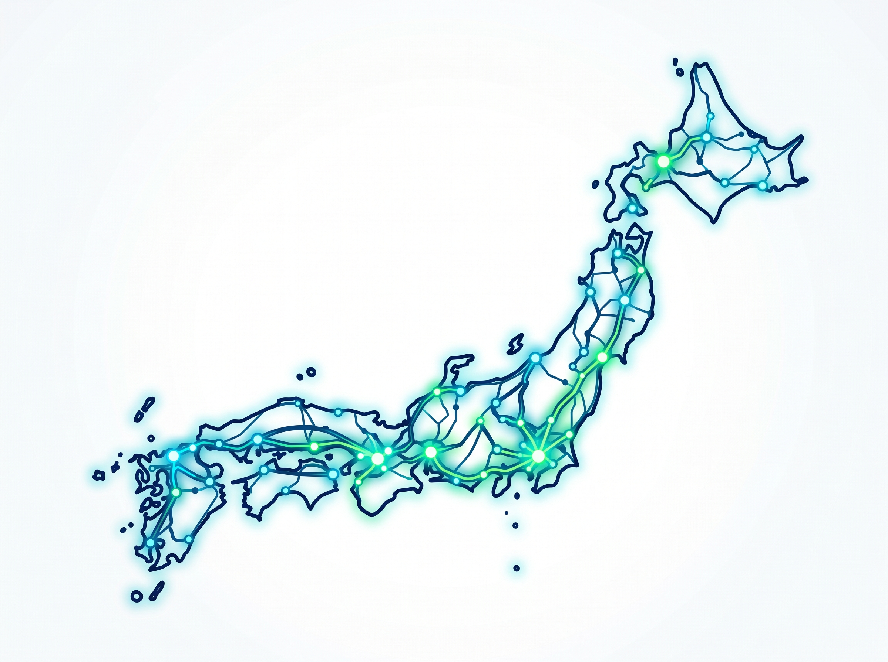

紙の回覧板から、
持続可能な地域の未来へ。
サーバー費完全０円で実現する、
新しい「スマート自治」の形。
小松 Smart自治PJ (KSL) は、班長さんの紙配布負担を解消するために
生まれた地域密着型のオープンソースプロジェクトです。
GitHub Pages・LINE・Google Workspaceを活用し、最大500世帯規模の
自治会業務を完全無料でデジタル化します。
サーバー費0円
(GitHub公開)
Google基盤
その負担を、
なくしたい。
開発の背景とストーリー
何十年も変わらなかった
「班長さんの負担」に、本気で向き合う。
毎月、重い紙の配布物や回覧板を持って一軒一軒配って回るーー。
長年続いてきたこの作業は、現代の自治会役員にとってあまりにも大きな負担です。
役員のなり手不足や地域の希薄化が進む中、私たちは「時代に即さない手法を改め、
現場の負担を本気でゼロにする」ことを目的に本プロジェクトを始動しました。
単にアプリを入れるのではなく、住民一人ひとりが「デジタル配信を希望し、紙の配布を
不要とする意思表示」を行える仕組みを作ることで、真のペーパーレスと持続可能な町内会運営を実現します。
開発・提案者：吉柴 文悟
誰もが真似できる。月額コスト０円を可能にするオープンアーキテクチャ。
LINE
(LIFF)
GitHub Pages
(フロントエンド)
スマホ最適化の
1ページ完結Web UI
Google スプレッドシート
(データベース)
専門知識不要で
手動更新が可能
Google Apps Script
(バックエンド)
ログイン照合・アクセスログ
などを安全に処理
安心のアクセス制限
名簿データと照合された住民のみがログイン状態で閲覧できる認可構造を採用。いたずら防止やプライバシー保護を徹底しています。
スマホ1ページで完結。住民も役員も迷わないスマート機能。
電子回覧板＆デジタル配布物
LINEから今月の配布物に直接アクセス。
回覧板と広報紙等のPDFをまとめて閲覧。
閲覧日時ログも自動保存。
公民館・施設予約
(2タッチ申請)
ログイン認証済みだから名前入力不要。
日付と部屋を選ぶだけの「2タッチ」で
申請完了。管理者はLINEで承認・却下を
ワンタップ処理。
イベント出欠＆行事回答
質問にスマホからサクッと回答。
回答状況はスプレッドシートへ自動反映。
手作業の集計苦労を解消。
災害時安否確認
万一の災害時には「無事」「連絡が必要」
を一斉確認、有事の地域防災インフラ
として機能。
1つの地域から、全国の自治会へ。オープンソースとして知見を共有。
小松 Smart自治PJは、特定の業者に依存するプロプライエタリなシステムではありません。
ソースコード、スプレッドシートのテンプレート、導入マニュアルはすべて公開されており、全国のエンジニアや自治体が自由に拝見・複製（Fork）・カスタマイズできます。
地域の課題を自分たちの手で解決する「シビックテック」の輪を広げ、持続可能な自治体モデルを共創していきます。

(GitHub)
DEVELOPER / PROPOSER
吉柴 文悟 Bungo Yoshiba
地域の課題を自分たちの手で解決する「シビックテック」を実践し、本プロジェクトを立ち上げました。
全国の班長さんの負担を減らし、持続可能な地域社会の実現を目指して、オープンソースでの開発と普及活動を行っています。